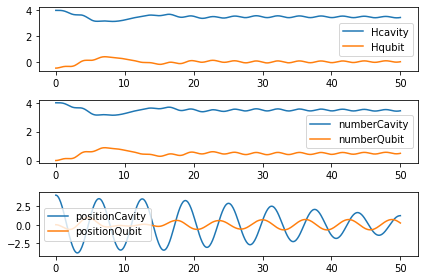
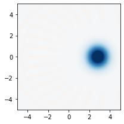
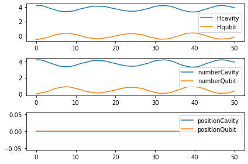
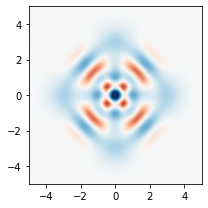
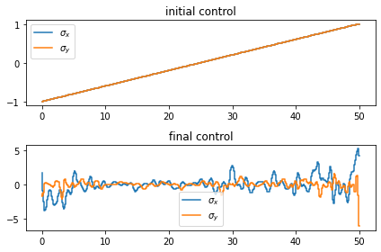

Implementing a universal gate set on a logical qubit encoded in an oscillator¶
paper
Heeres, R., Reinhold, P., Ofek, N. et al. Implementing a universal gate set on a logical qubit encoded in an oscillator. Nat Commun 8, 94 (2017). https://doi.org/10.1038/s41467-017-00045-1
Jaynes-Cummings interaction: \(H_{\text{jc}}=\sigma_+ a + \sigma_- a^{\dagger}\)
dispersive regime: \(H_{\text{disp}}=\chi a^{\dagger}a|e\rangle\langle e|\), a small set of operations acting on a timescale of \(2\pi/\chi\) is in principle sufficient for universal control [16,17]
Kerr non-linearity: \(H_{\text{Kerr}}={K\over 2}(a^{\dagger})^2 a^2\)
Drive Hamiltonian: \(H_{\text{dri}}=\epsilon_C(t)\; a + \epsilon_T(t)\; \sigma_- + h.c.\)
Encoding a logical qubit in an even-parity four-component cat subspace
cat state: \(\text{cat}(\alpha)=|\alpha\rangle + |-\alpha\rangle\)
code states (\(\alpha=\sqrt{3}\)): \(|\pm Z_\text{L}\rangle = \text{cat}(\alpha) \pm \text{cat}(i\alpha)\)
\(|+ Z_\text{L}\rangle = \sum\limits_n {\alpha^{4n}\over \sqrt{(4n)!}}|4n\rangle \quad |- Z_\text{L}\rangle = \sum\limits_n {\alpha^{4n+2}\over \sqrt{(4n+2)!}}|4n+2\rangle\)
encoding: \(\begin{cases} |g,0\rangle & \to & |g,+Z_\text{L}\rangle \\ |e,0\rangle & \to & |g,-Z_\text{L}\rangle \end{cases}\)
Using GRAPE
create a universal set of gates on the logical qubit \(R_{\text{X}}({\pi\over 2}),H,T, U_{\text{enc}}, U_{\text{dec}}\)
These pulses are each \(1100 \text{ ns}\approx 2.4\times {2\pi\over \chi}\) in length with a \(2\text{ ns}\) time resolution
import numpy as np
%matplotlib inline
from qutip import *
import qutip.control.pulseoptim as pulseoptim
# my own qutip helper library
# pip install yarn
from yarn.qutipHelpers import \
jaynesCummingsHamiltonian, \
plotExpectation, plotWigners, plotOptimalControl, \
cat
dimCav = 20
H, controlsDict, observables, operators = jaynesCummingsHamiltonian(
cavityDimension=dimCav, omegaCavity=1, omegaQubit=1, g=0.1
)
controlsList = list(controlsDict.values())
controlsName = list(controlsDict.keys())
zPlus = (cat(dimCav,2)+cat(dimCav,2j)).unit()
zMinus = (cat(dimCav,2)-cat(dimCav,2j)).unit()
initialPsi0 = tensor(coherent(dimCav,2), fock(2,0))
targetPsi0 = tensor(zPlus, fock(2,0))
Ntime = 500; totalTime = 50
time = np.linspace(0, totalTime, Ntime)
for psi0 in [initialPsi0, targetPsi0]:
result = mesolve(H, psi0, time, [], [])
plotExpectation(time,observables,result)
plotWigners([ptrace(psi0, 0)],radius=5)
optimizedResult = pulseoptim.optimize_pulse_unitary(
H,controlsList,initialPsi0,targetPsi0,Ntime,totalTime,
init_pulse_type='LIN',
)
plotOptimalControl(optimizedResult,controlsName)





************ title summary ************ Final fidelity error 0.11146789409492752 Final gradient normal 0.004560439123428361 Terminated due to Max wall time exceeded Number of iterations 306 Completed in 0:03:00.166365 HH:MM:SS.US